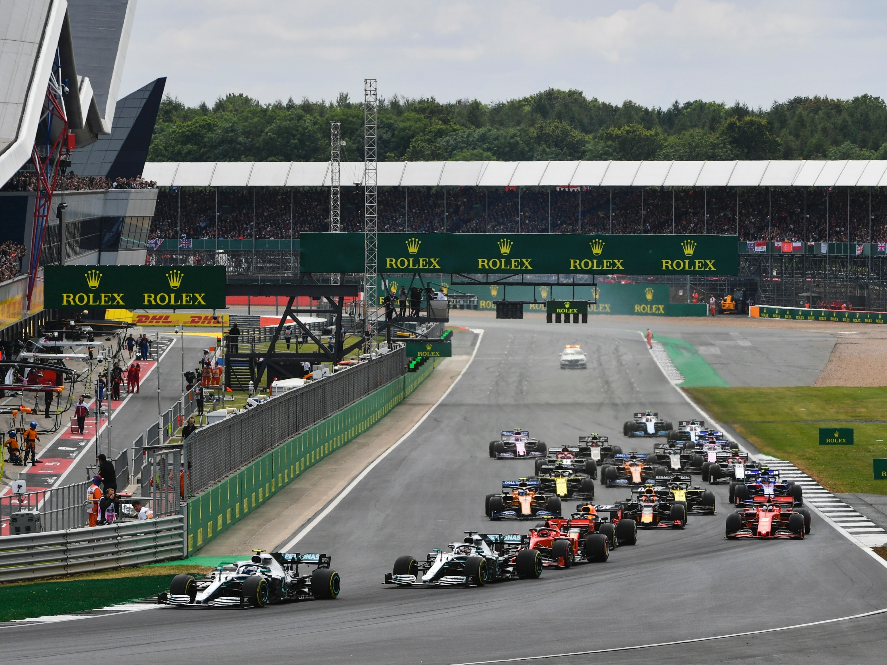
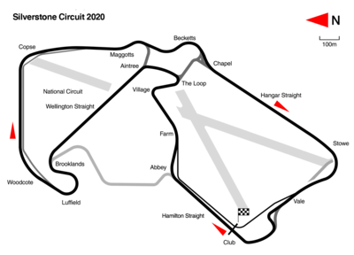

NAVEGUE
Home
Pilotos
Calendário/Tabela
Grand Prix
Construtoras
Últimas Notícias
GP de Silverstone
SOBRE
A pista de Silverstone é um circuito de corrida localizado na Inglaterra, que é conhecido por sediar o Grande Prêmio da Grã-Bretanha de Fórmula 1 desde 1950. A pista tem um comprimento de 5,891 km e é caracterizada por suas curvas de alta velocidade, como a curva Copse e a curva Maggots-Becketts-Chapel. A pista também apresenta algumas áreas de frenagem pesada, como a curva Stowe, que oferecem oportunidades de ultrapassagem emocionantes. A pista de Silverstone é considerada uma das mais rápidas do calendário da Fórmula 1, e é um teste de habilidade e coragem para os pilotos.
Circuitos Utilizados
Silverstone

INFORMAÇÕES DA CORRIDA

Localização
Silverstone, Inglaterra
Voltas
52
Percurso
5.891 km
Total
306.332 km
Curvas
18
Pole
Lewis Hamilton
Anos Disputados
77
Última Disputa
2022
Maior vencedor
Lewis Hamilton
Última Corrida - Pódio
Carlos Sainz JR.